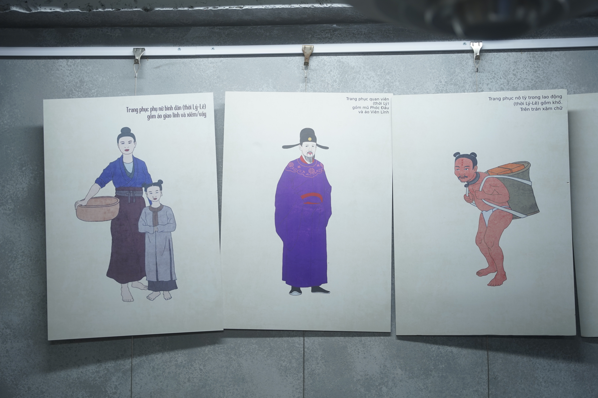
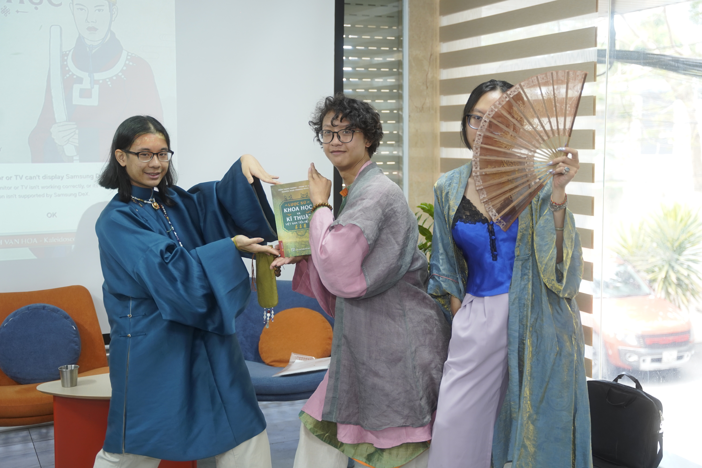
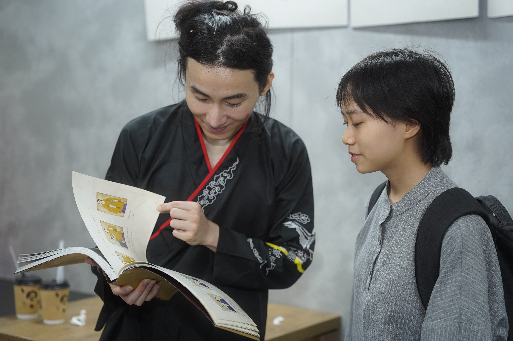

Cổ phục như một lớp ký ức vật chất, nơi lịch sử hiện lên qua dáng áo, khăn, mũ và phụ kiện.
衣
Ngày 7/6, sự kiện Trà sáng và cổ phục diễn ra tại số 79 Đặng Tiến Đông, Hà Nội, quy tụ các nhà nghiên cứu, người thực hành cổ phục và đông đảo công chúng yêu văn hóa truyền thống.
Nằm trong khuôn khổ dự án văn hóa Kính Vạn Hoa - Kaleidoscope of the Past, “Trà sáng và cổ phục” là không gian kết nối các nhà nghiên cứu, người thực hành cổ phục và công chúng. Qua đó, chương trình góp phần thúc đẩy hành trình tìm hiểu, bảo tồn và phát huy giá trị trang phục truyền thống Việt Nam, đặc biệt trong bối cảnh hiện đại.
Người nghiên cứu và người thực hành cùng đối thoại về phục dựng, trình diễn và đưa cổ phục trở lại đời sống.
Người trẻ tiếp cận di sản bằng những câu hỏi mới, dự án mới và nhu cầu tìm hiểu bản sắc rõ ràng hơn.
Tham gia tọa đàm có sự góp mặt của diễn giả Đức Vũ - nhà sáng lập thương hiệu cổ phục Great Vietnam, người khởi xướng sự kiện Bách Hoa Bộ Hành, cùng Nguyễn Ngọc Phương Đông - tác giả các công trình nghiên cứu về trang phục và giáp trụ Việt Nam như “Dệt Nên Triều Đại” và “Mình Đồng Da Sắt”. Đây là dịp để người tham gia lắng nghe những góc nhìn chuyên sâu, từ đó hiểu rõ hơn về quá trình phục dựng cổ phục và lịch sử trang phục Việt Nam trong các thời kỳ.
Không gian trưng bày
KhiTrang phụctrở thànhTư liệu sống


Từ phục dựng đến thực hành
Sự kiện mở đầu với phần giới thiệu các loại y phục tiêu biểu của người Việt qua nhiều giai đoạn lịch sử như giao lĩnh, viên lĩnh, tứ thân, ngũ thân cùng các loại khăn, mũ và phụ kiện truyền thống từ Ban Tổ chức. Sau đó, khách mời và người tham dự cùng bước vào tọa đàm mở xoay quanh lịch sử trang phục Việt Nam, công tác phục dựng và xu hướng phát triển của phong trào cổ phục hiện nay.

trong cổ phụcCác bạn trẻ lựa chọn diện cổ phục đến tham dự chương trình, thể hiện sự quan tâm đối với việc tìm hiểu và lan tỏa các giá trị văn hóa truyền thống.
Người trẻ và một hệ thống trang phục phong phú
Bên cạnh đó, người tham gia còn tích cực trao đổi với các diễn giả trong phần giao lưu. Hoạt động này nhận được sự hưởng ứng tích cực từ người tham dự. Nhiều khán giả nán lại sau chương trình để tiếp tục trò chuyện với khách mời, tiếp cận thêm các nguồn tư liệu nghiên cứu và bày tỏ niềm yêu thích đối với văn hóa truyền thống.
Quỳnh Chi, sinh viên năm ba ngành Lịch sử, Trường Đại học Khoa học Xã hội và Nhân văn chia sẻ: “Trước đây, nhiều người thường chỉ biết đến áo dài như một trang phục truyền thống tiêu biểu của Việt Nam, nhưng hệ thống cổ phục Việt thực tế phong phú hơn rất nhiều. Hiện em đang thực hiện một dự án sinh viên về nhận thức của người trẻ đối với áo ngũ thân, buổi tọa đàm hôm nay sẽ giúp em có thêm nhiều chất liệu cho đề tài của mình”.

Đối thoại · Tiếp nối
Di sản không nằm yên trong quá khứ
Thông qua những trao đổi cởi mở, “Trà sáng và cổ phục” đã mở ra những cuộc thảo luận về vị trí của di sản nói chung và cổ phục nói riêng trong đời sống đương đại.
Theo Ban Tổ chức, dự án Kính Vạn Hoa - Kaleidoscope of the Past sẽ tiếp tục mang đến cho công chúng những hoạt động hấp dẫn trong thời gian tới.
Nội dung · Thu Ngân